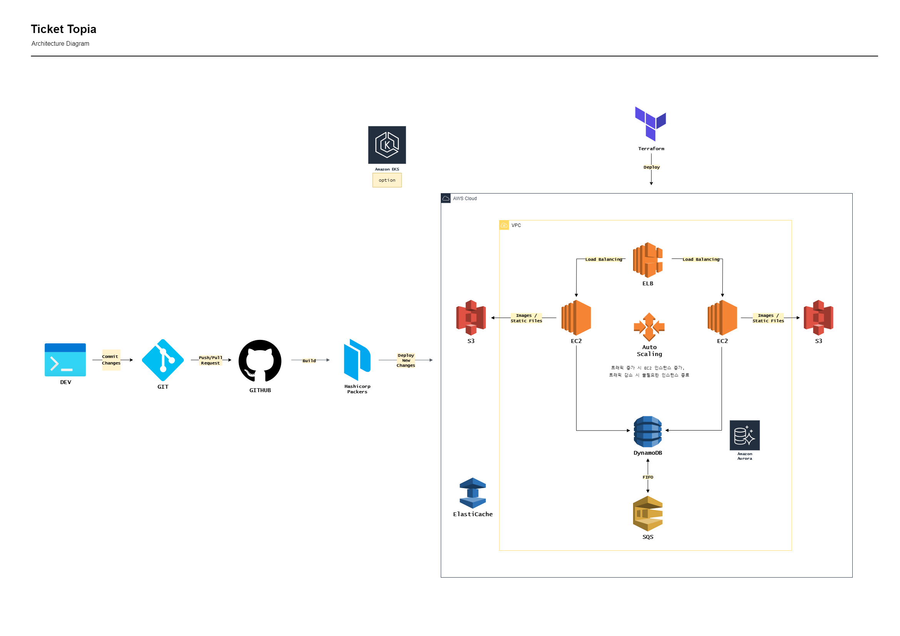

지원 동기
저는 인프라를 처음부터 설계하고 구축하는 과정에서 큰 보람을 느끼며, 이를 지속적으로 발전시키고자 클라우드 엔지니어 직무를 목표로 삼게 되었습니다. 클라우드 교육과 실습 과정에서 AWS, Docker, Kubernetes, Terraform 등 다양한 기술을 활용하여 여러 형태의 인프라를 구축한 경험이 있습니다. 특히 Terraform을 통한 인프라 자동화에서는 수작업 대비 효율성이 크게 향상되는 것을 체감했고, GitHub Actions를 이용한 CI/CD 파이프라인 구축에서는 서비스 배포 과정이 안정적으로 자동화되는 성과를 얻었습니다.
성격의 장단점
저는 세밀함과 꼼꼼함을 강점으로 가지고 있습니다. 프로젝트를 진행할 때 단순히 기능 구현에 그치지 않고, 과정과 결과를 명확하게 문서화하여 팀원들과 공유하는 것을 중요하게 생각합니다. 이러한 습관은 업무의 효율성을 높이고, 문제 발생 시 신속한 원인 파악에 큰 도움이 되었습니다.
반면, 세부 사항에 집중하다 보니 때때로 업무 속도가 느려질 수 있습니다. 이를 보완하기 위해 우선순위를 명확히 설정하고, 주요 기능을 먼저 완성한 후 세부 사항을 다듬는 방식으로 업무 스타일을 개선하고 있습니다.
입사 포부
입사 후에는 먼저 회사의 인프라 환경과 업무 프로세스를 빠르게 이해하여 안정적인 시스템 운영에 기여하겠습니다. 또한 자동화와 모니터링 환경 개선을 통해 효율성을 높이고, 장애 발생 시 신속한 복구가 가능하도록 대응 능력을 강화하겠습니다. 장기적으로는 보안성과 확장성을 모두 갖춘 클라우드 아키텍처 설계 역량을 갖추어, 귀사의 서비스 품질과 운영 안정성 향상에 기여하는 엔지니어로 성장하겠습니다.
IT 팀 프로젝트: Ticket Topia
2024년 7월 ~ 8월
확장성 및 재사용성을 고려한 대규모 티켓 예매 서비스 인프라 구축
사용 기술
프로젝트 목표
예상 동시 접속자 30만 명을 안정적으로 수용할 수 있는 티켓 예매 서비스 환경을 구축하는 것을 목표로 했습니다. 1인 1매 제한, 결제 순 좌석 배치, 매크로 방지 등 비즈니스 요구사항을 만족시키면서, 예매 당일 폭증하는 트래픽을 효과적으로 처리하는 데 중점을 두었습니다.
주요 역할 및 해결 과정
Terraform을 활용한 인프라 자동화 (IaC): 반복적인 인프라 구축 작업을 자동화하고 일관성을 유지하기 위해 Terraform을 도입했습니다. 모든 인프라(VPC, Subnet, EC2 등)를 코드로 관리함으로써, 휴먼 에러를 최소화하고 향후 유사한 이벤트 발생 시 신속하게 기존 환경을 재사용하고 배포할 수 있는 기반을 마련했습니다.
CI/CD 파이프라인 구축: 개발 효율성을 높이기 위해 GitHub Actions를 활용한 CI/CD 파이프라인을 구축했습니다. 팀원이 Django 설정 파일을 수정하여 GitHub에 Push하면, 자동으로 Docker 이미지를 빌드하고 Amazon ECS(Elastic Container Service)에 무중단 롤링 업데이트 방식으로 배포되도록 워크플로우를 설계했습니다. 이를 통해 수동 배포 과정을 제거하고, 코드 변경 사항을 신속하고 안정적으로 운영 환경에 반영할 수 있었습니다.
오토 스케일링 및 부하 분산 설계: 티켓 예매 시작과 동시에 발생하는 트래픽 급증에 유연하게 대응하기 위해 Auto Scaling Group(ASG)과 Application Load Balancer(ALB)를 아키텍처의 핵심으로 구성했습니다. ALB가 사용자 요청을 여러 EC2 인스턴스에 고르게 분산시켜 특정 서버의 과부하를 방지하고, ASG는 실시간 트래픽 수요에 맞춰 인스턴스 수를 자동으로 확장 및 축소하여 최적의 자원 효율성과 성능을 유지하도록 설계했습니다.
성과
구축된 인프라는 특정 인스턴스에 장애가 발생하더라도 이를 자동으로 감지하고 정상 인스턴스로만 트래픽을 전달하여 서비스 중단을 방지합니다. 그 결과, 사용자는 트래픽이 몰리는 상황에서도 지연 없이 티켓을 예매할 수 있는 안정적인 환경을 제공받게 되었고, 운영 비용 또한 효율적으로 관리할 수 있었습니다.